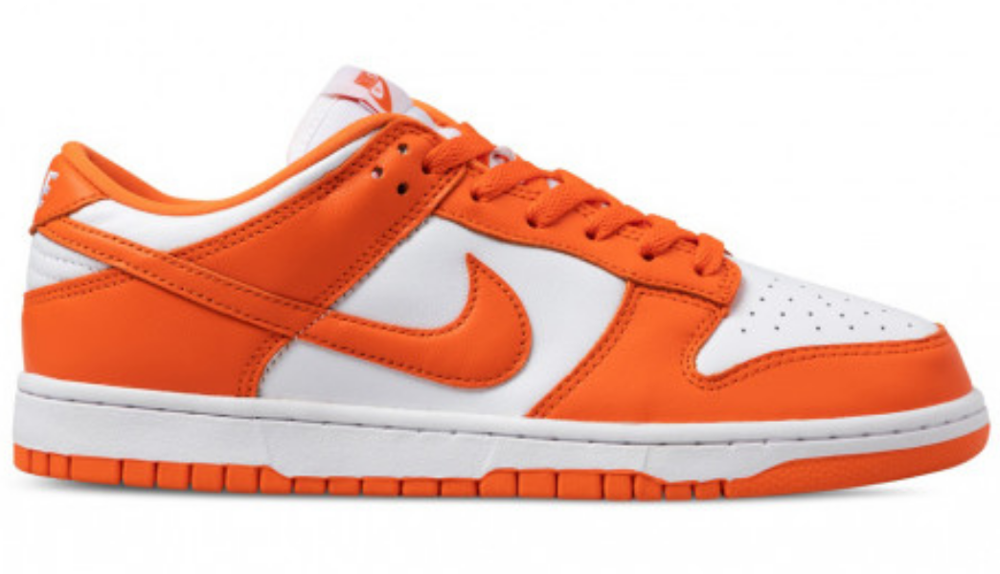

<!Doctype html>
    <html lang="ru"></html>
<head>
    <link rel="stylesheet" href="kartohka2.css">
      <meta charset="utf-8">
      
      <meta name="viewport" content="width=device-width, initial-scale=1.0">
    <title>Nike Dunk Low SP</title>
</head>
<body class="body">
  <main class="header">       
    <div class="background-color">
      <a href="file:///C:/Users/Alena/Pictures/Проектная%20работа/Проектная%20работа%202/Главная%20страница/Кроссы.html"><div class="logo"></div></a>
<nav>
  <ul>
   <li><a href="https://web.telegram.org/a/" ></a></li>
   <li><a href="https://vk.com"></a></li>
   <li><a href="https://www.youtube.com/">  </li></a>
   </ul>
</nav>
</div>       
  </header>

  <main class="main">
    <div class="DPcontainer">
    <div class="container">

<div class="name">
    <h1>Nike Dunk Low SP</h1>
        <h2>Nike Dunk Low Orange Blaze Syracuse</h2>
            <p>Nike — американская транснациональная компания, специализирующаяся на спортивной одежде и обуви. Штаб-квартира — в городе Бивертон (штат Орегон).<br><br>

                Почти вся продукция Nike производится сторонними компаниями-подрядчиками вне территории США (в основном в Азии), сама компания является правообладателем торговых марок, разрабатывает дизайн продукции и владеет сетью магазинов (около 1150 по всему миру), а также торговых центров NikeTown. С 20 сентября 2013 года входит в Промышленный индекс Доу Джонса. Nike является самым дорогим спортивным брендом в мире (по мнению Forbes).<br><br>
                
                Компания, основанная 25 января 1964 года под названием Blue Ribbon Sports, официально стала Nike, Inc. в 1978 году. Nike продаёт свою продукцию под собственным брендом, а также под марками Nike Golf, Nike Pro, Nike +, Air Jordan, Nike Blazers, Air Force 1, Nike Dunk, Air Max, Foamposite, Nike Skateboarding, Nike CR7, Hurley International, Converse. Nike является спонсором многих спортсменов и спортивных команд по всему миру. Начиная с 1990-х годов компания регулярно подвергается критике за то, что её продукция производится на фабриках, где нарушается трудовое законодательство.</p>       
</div>
<div class="table">
    <div class="text1">
        <h3>О кроссах</h3>
    </div>
    <div class="text1">
        <h4>Дата выхода</h4>
            <div class="text2">
                <h4> 10/03/2023</h4> 
            </div>
    </div>
    <div class="text1">
        <h4>Розничная цена</h4>
        <div class="text2">
            <h4>251€</h4> 
        </div>
    </div>
    <div class="text1">
        <h4>Материалы</h4>
        <div class="text2">
            <h4>Кожа 100%, резина</h4> 
        </div>
    </div>
</div>

    </div>
    </div>


    </main>

    <main class="footer">
        <div class="background-color2">    
            <a href="file:///C:/Users/Alena/Pictures/Проектная%20работа/Проектная%20работа%202/Главная%20страница/Кроссы.html"><div class="logo2"></div></a>
          <nav>
            <ul>
             <li> <a href="https://web.telegram.org/a/" ></a></li>
             <li><a href="https://vk.com"></a></li>
             <li><a href="https://www.youtube.com/">  </li></a>
             </ul>
          </nav>       
        </div>
    
        <div class="Fop">    
        </div>
        
        <div class="text_two">
          <p class="Flotters">КРОССЫ И ТОЧКА ® 2023</p>
        </div>
    
    
    </footer>
    
    </body>
    </html>
    </html>